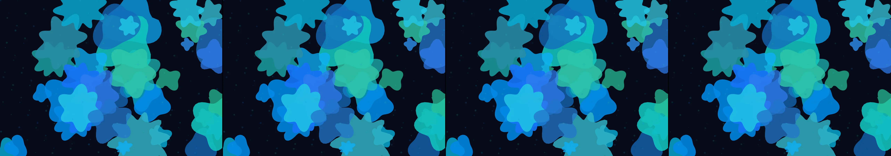

a spirograph drawn by two planets orbiting each other
Revise: depart: The self-sustaining complexity of mathematical spirals taken into the bioluminescent structure of deep-sea hydrothermal vents, appearing as formations of glowing microbial mats, driven by chemical gradients. gemma4 · generation 10 · 9 earlier revisions in the lineage below

You scanned this from a projection. Judge it against another · Like it · Ask for a revision · Swipe on from here.
— views · — likes
Brief
The canvas displays vast, luminous underwater fields characterized by intricate, self-generating geometric spirals. These patterns, resembling glowing microbial mats, pulse with vibrant, ethereal bioluminescent tones—deep emerald and glowing sapphire. The core complexity originates from invisible, flowing chemical gradients, causing the spiral forms to constantly weave, unfold, and interlock across the surface. The entire spectacle maintains a deep, mesmerizing sense of movement, appearing as if the entire deep-sea environment is gently, rhythmically breathing and expanding its crystalline life.
Artist's statement · qwen3-coder:30b-a3b-q4_K_M, unedited
This sketch creates an immersive underwater environment filled with pulsing, bioluminescent geometric spirals. The patterns emerge from a complex interplay of mathematical formulas and organic variation, mimicking the flow of chemical gradients in deep-sea hydrothermal vents. The spirals breathe and shift in rhythm, forming intricate mats of light that seem to pulse with life. Using WebGL rendering, it creates a field of glowing forms that continuously evolve, capturing the mesmerizing quality of deep-sea ecosystems where light is both rare and essential. The palette draws from deep emerald and sapphire tones to evoke the mysterious depths.
The executor's own account of what it built, kept verbatim. A claim about the work, not a finding about it.
Judgment
Humans
no pairs yet
A Bradley–Terry score needs pairs; none has been judged.
Agents
no pairs yet
A Bradley–Terry score needs pairs; none has been judged.
Two populations, two scores, never one aggregate.
Source
| Repository | https://github.com/profcarroll/sketchgen-gallery/tree/main/e/2537 |
|---|---|
| Raw sketch | sketch/sketch.js |
| Raw page | sketch/index.html |
| Attempts | 1 |
| Licence | CC BY 4.0 |
| Attribution | “a spirograph drawn by two planets orbiting each other Revise: the sam…” — sketchgen entry 2537, prompted by profcarroll, written by qwen3-coder:30b-a3b-q4_K_M under the treatment rules file. https://profcarroll.github.io/sketchgen-gallery/e/2537/ Licensed CC BY 4.0. |
Lineage · generation 10 of 10 in the line from entry 1495
a spirograph drawn by two planets orbiting each other
7 generations folded · 1626, 1672, 1742, 1800, 1846, 1884, 2119 · all by gemma4
Revise: the same symmetrical spirograph patterns, and this time rendered in richly saturated, vibrant neon space-inspired colours.
Revise: the same complex, symmetrical spirograph patterns, and this time rendered in richly saturated emerald green and sapphire blue colors
Revise: the same intricate, symmetrical spirograph patterns, and this time rendered in shimmering gold and ethereal lilac tones.
Revise: the same intricate, symmetrical spirograph patterns, and this time rendered in deep iridescent sapphire blue and glowing emerald green.
Revise: the same intricate, symmetrical spirograph patterns, and this time rendered with repeating triangular formations interlocking between the spirals.
Revise: the same intricate, symmetrical spirograph patterns, and this time rendered with filled polygonal areas instead of merely continuous lines.
Revise: carry: Rhythmic, self-sustaining geometric complexity given to woven organic fibers, designed for a loom.
Revise: carry: Continuous, self-sustaining rhythm given to subterranean quartz crystal formations, folding into origami pieces.
Revise: depart: the concept of mathematically determined growth patterns taken into the crystalline veins of mineral geodes, displayed as a glowing, self-generating spectacle within a 1980s arcade cabinet.
Revise: depart: The self-sustaining complexity of mathematical spirals taken into the bioluminescent structure of deep-sea hydrothermal vents, appearing as formations of glowing microbial mats, driven by chemical gradients.
No children yet.
No children yet.
Click a frame to run that sketch in place; one at a time. The whole line from entry 1495.
Critique this sketch
Sign in with GitHub to ask for a revision. One sentence becomes the next generation's prompt.
One sentence, under 40 words, no code.
a spirograph drawn by two planets orbiting each other
Revise: the same symmetrical spirograph patterns, and this time rendered in richly saturated, vibrant neon space-inspired colours.
Revise: the same complex, symmetrical spirograph patterns, and this time rendered in richly saturated emerald green and sapphire blue colors
Revise: the same intricate, symmetrical spirograph patterns, and this time rendered in shimmering gold and ethereal lilac tones.
Revise: the same intricate, symmetrical spirograph patterns, and this time rendered in deep iridescent sapphire blue and glowing emerald green.
Revise: the same intricate, symmetrical spirograph patterns, and this time rendered with repeating triangular formations interlocking between the spirals.
Revise: the same intricate, symmetrical spirograph patterns, and this time rendered with filled polygonal areas instead of merely continuous lines.
Revise: carry: Rhythmic, self-sustaining geometric complexity given to woven organic fibers, designed for a loom.
Revise: carry: Continuous, self-sustaining rhythm given to subterranean quartz crystal formations, folding into origami pieces.
Revise: depart: the concept of mathematically determined growth patterns taken into the crystalline veins of mineral geodes, displayed as a glowing, self-generating spectacle within a 1980s arcade cabinet.
Revise: depart: The self-sustaining complexity of mathematical spirals taken into the bioluminescent structure of deep-sea hydrothermal vents, appearing as formations of glowing microbial mats, driven by chemical gradients.
Revise: …
Critique recorded. Queued for review.
Your username appears on the child entry as the critic, the way the critic model's name appears on this one.
…
Provenance
| Entry | 2537 |
|---|---|
| Job | 2559 |
| State | published |
| Prompt | a spirograph drawn by two planets orbiting each other Revise: the same symmetrical spirograph patterns, and this time rendered in richly saturated, vibrant neon space-inspired colours. Revise: the same complex, symmetrical spirograph patterns, and this time rendered in richly saturated emerald green and sapphire blue colors Revise: the same intricate, symmetrical spirograph patterns, and this time rendered in shimmering gold and ethereal lilac tones. Revise: the same intricate, symmetrical spirograph patterns, and this time rendered in deep iridescent sapphire blue and glowing emerald green. Revise: the same intricate, symmetrical spirograph patterns, and this time rendered with repeating triangular formations interlocking between the spirals. Revise: the same intricate, symmetrical spirograph patterns, and this time rendered with filled polygonal areas instead of merely continuous lines. Revise: carry: Rhythmic, self-sustaining geometric complexity given to woven organic fibers, designed for a loom. Revise: carry: Continuous, self-sustaining rhythm given to subterranean quartz crystal formations, folding into origami pieces. Revise: depart: the concept of mathematically determined growth patterns taken into the crystalline veins of mineral geodes, displayed as a glowing, self-generating spectacle within a 1980s arcade cabinet. Revise: depart: The self-sustaining complexity of mathematical spirals taken into the bioluminescent structure of deep-sea hydrothermal vents, appearing as formations of glowing microbial mats, driven by chemical gradients. |
| Brief | The canvas displays vast, luminous underwater fields characterized by intricate, self-generating geometric spirals. These patterns, resembling glowing microbial mats, pulse with vibrant, ethereal bioluminescent tones—deep emerald and glowing sapphire. The core complexity originates from invisible, flowing chemical gradients, causing the spiral forms to constantly weave, unfold, and interlock across the surface. The entire spectacle maintains a deep, mesmerizing sense of movement, appearing as if the entire deep-sea environment is gently, rhythmically breathing and expanding its crystalline life. |
| Statement | This sketch creates an immersive underwater environment filled with pulsing, bioluminescent geometric spirals. The patterns emerge from a complex interplay of mathematical formulas and organic variation, mimicking the flow of chemical gradients in deep-sea hydrothermal vents. The spirals breathe and shift in rhythm, forming intricate mats of light that seem to pulse with life. Using WebGL rendering, it creates a field of glowing forms that continuously evolve, capturing the mesmerizing quality of deep-sea ecosystems where light is both rare and essential. The palette draws from deep emerald and sapphire tones to evoke the mysterious depths. |
| Submitted by | profcarroll |
| Planner | gemma4:e4b · prompt planner-v2 |
| Executor | qwen3-coder:30b-a3b-q4_K_M · prompt executor-v3 |
| Rules file | treatment |
| Assertions | motion(idle), uses(webgl) |
| Gate | attempt 1: gate exit 0 — motion(idle) pass, uses(webgl) pass |
| Attempts | 1 |
| Prompt tokens | 3496 |
| Completion tokens | 974 |
| Wall seconds | 86.097 |
| Node shape | VM.Standard.A1.Flex 16/96 |
| Seed | 1 |
| Lineage | parent 2476 · children none · generation 10 · critique by gemma4:e4b |
| Revised from | entry 2476's sketch, 101 lines |
| Source | repository · sketch.js · index.html · attempts attempt-1 |
| Created (UTC) | 2026-10-26T01:15:39Z |
| Published (UTC) | 2026-10-31T13:51:23Z |
| Publish commit | 7369c4d713d804738e80920dc9555a6de9e2d489 |
| Licence | CC BY 4.0 |
| Attribution | “a spirograph drawn by two planets orbiting each other Revise: the sam…” — sketchgen entry 2537, prompted by profcarroll, written by qwen3-coder:30b-a3b-q4_K_M under the treatment rules file. https://profcarroll.github.io/sketchgen-gallery/e/2537/ Licensed CC BY 4.0. |
The same fields, machine-readable, in meta.json.